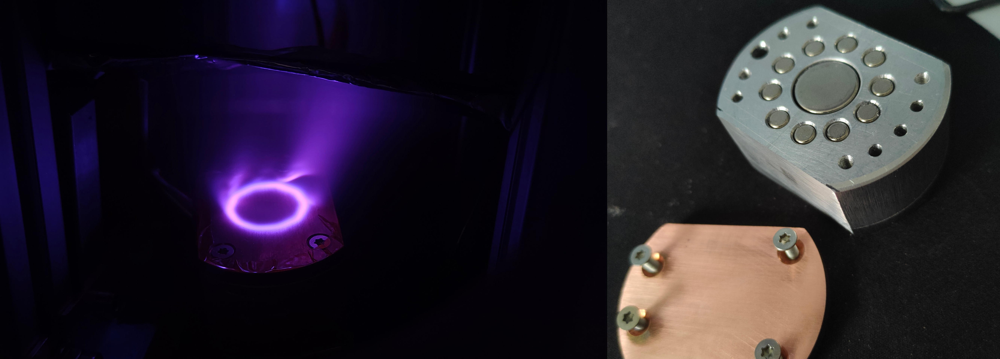

PVD (Plasma Vapour Deposition) magnetron is a device that essentially smashes heavy gas particles on a target material and causes it to spray off and adhere to a nearby surface. This process can easily cover almost anything in thin metal layers! This might come in handy when imaging with my planned-to-do electron microscope (it requires a conducive surface for the electrons to bounce off) and to create semi-transparent mirrors (maybe even, in the future, a thin layer filters).
My creation is, simply speaking, a holder for magnets and a target material. The magnets force a ring pattern collisions on a surface of the target. The material then sprays off and coats anything in its path (or stops on scattered gas molecules). The magnetron must be powered by a negative HV power supply (we must ionise the gas and accelerate it to the target) and be cooled which is currently a problem. The atmosphere around the magnetron must be non-perfect vacuum filled with a nobel or inert gas. The pressure must be tuned so that there are enough gas particles to collide efficiently with the target but not as much to prevent the sprayed particles to reach the desired surface.
The project is currently halted and waits for the following: argon gas supply, negative voltage power supply, cooling system. After resolving these problems I will post an update :)